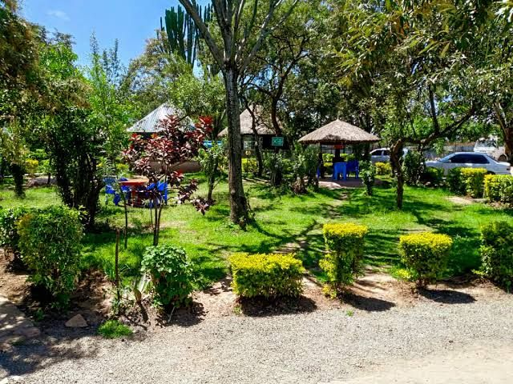

Open all night
Doors open 24 hours, every day
Early coffee, a midday platter or a late-night bite. The kitchen and the bar never close, and we deliver across Narok town.
Call to orderAbout Hightable
Where memories are made
Hightable Gardens is a bar and restaurant in the Mwamba area of Narok town. Meat is grilled over fire, platters come out big enough to share, and the garden has room for the whole family. There is a butchery on site, a conference hall for meetings and a play ground for the kids.
See the menu
Our Menu
Grilled, fresh and shared